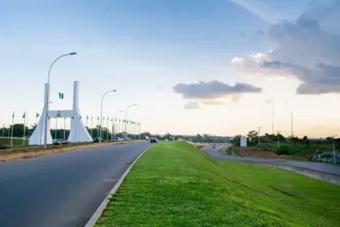
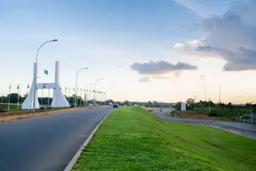
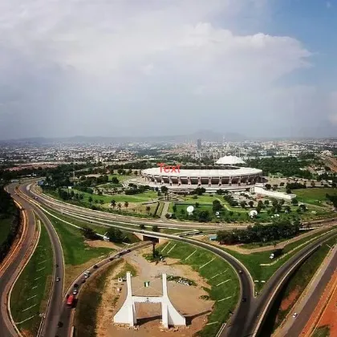
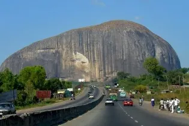
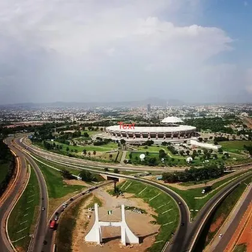
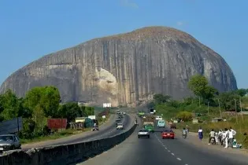

About Kubwa
Kubwa, situated in Bwari, a local government area within the Federal
Capital Territory of Nigeria, stands as a significant residential
district. It holds prominence as one of the primary suburbs within
the broader metropolitan expanse of Abuja.
The Kubwa Community, established in 1990, stands as West Africa's
largest community. Spanning approximately 26 kilometers from Wuse
Market, it initially housed the Gbagi people. However, due to
government relocation policies, Kubwa transformed into a diverse
community, welcoming a blend of ethnicities, including the prominent
Hausa, Yoruba, and Igbo groups alongside other minorities. Its
residents, predominantly comprising civil servants, entrepreneurs,
artisans, and commercial motorcycle riders, reflect a dynamic and
heterogeneous population.
Sustainable Actions of Kubwa Community
The Kubwa community has experienced sustainable growth and
development; however, its progress has been relatively slow compared
to other rapidly expanding cities worldwide. Residents attribute
this to the newfound diversity in ethnicity and professions, along
with the improved infrastructure of roads, markets, and
supermarkets, which have laid a sturdy foundation for their
community. Remarkably, these advancements have been achieved at a
relatively affordable cost. Financial sustainability stems from
various business endeavors within the community, including
supermarkets, shops, and general markets like the Kubwa Market and
site 2-phase 1 Market, operated by community members. Additionally,
over 60 percent of residents are civil servants employed by federal
and capital territory government organizations, with the remainder
comprising entrepreneurs, private security agents, low-cost housing
builders, truck pushers, commercial motorcycle riders, and real
estate practitioners. Cooperative societies and significant
investments by community members have also played a pivotal role in
Kubwa's financial sustainability. The flexible investment options
offered by cooperative societies, such as monthly and weekly cash
deposits and higher interest rates compared to other financial
institutions, attract substantial financial contributions from
community members.
Events
To stay in the loop with the latest events and updates, head over to
our platform. Dive into our comprehensive resource hub to catch up
on what's happening, discover upcoming gatherings, and access
insightful updates. Whether you're chasing the buzz of trending
events or staying informed about the latest developments, our
platform is your ultimate destination for all things events-related.
Come join us on this journey of discovery and engagement,
guaranteeing you're always up-to-date with the dynamic world of
events.
Kubwa updates
 


 


